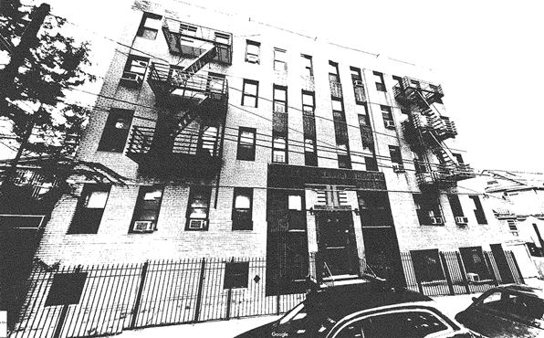
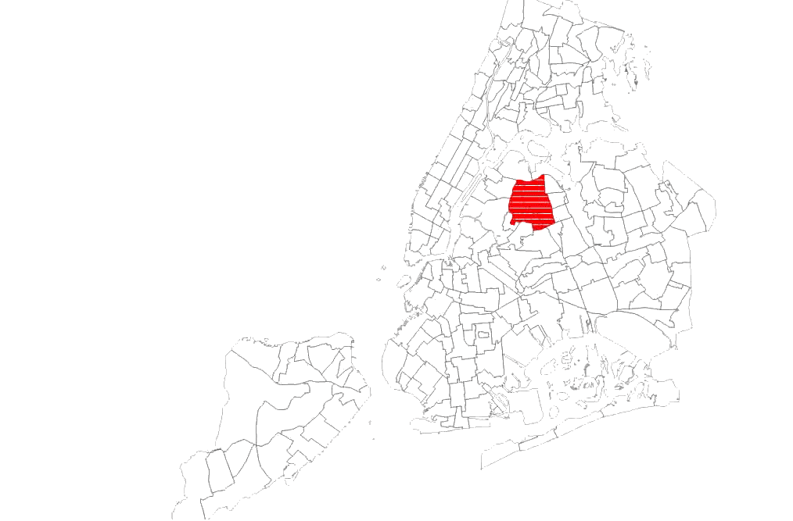
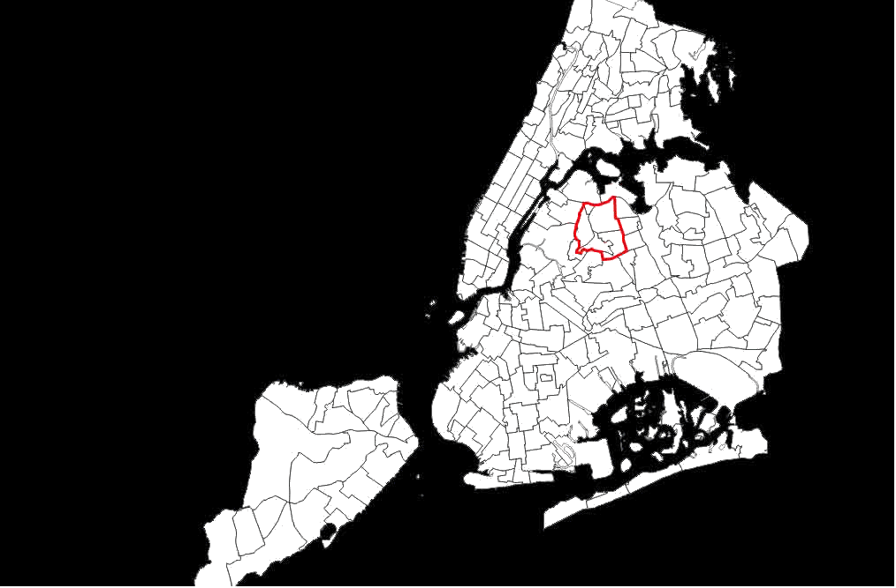
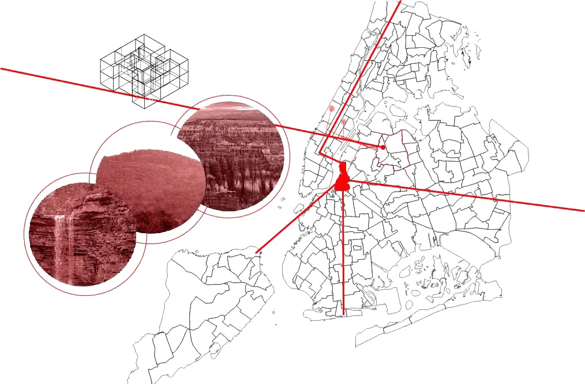

Introduction
IntroductionIntroduction
The life of a building energizes its inhabitants from the inside out and the outside in. The building 42-63, in Jackson Heights, Queens, is a place of shelter both for people and language. Language is spoken privately, between families, friends, and neighbors. However, language does not live only in the confined spaces of individual apartments: it resounds against the floors, walls, and ceilings that shape the building. The voices speakers carry with them travel beyond the building in journeys that cover the city, the country, and the world.
42-63 City Microcosm argues that language contextualizes the city and colors it with its needs and interests. Language also sustains the city’s communities. The network of that language’s speakers grows into other areas, where the language may or may not be expected. The case study focuses on the current transition of building 42-63. While 42-63 has traditionally housed many Polish speakers, the demographic makeup of the neighborhood is changing: With many Poles moving out, the language of 42-63 has changed significantly.
Building Dynamics
Within the residential building, shared language opens up spaces beyond the single unit household. New York City's housing history is well-known for its collectivism. Long-term residents are often familiar with more than their own apartment, and know their buildings and neighborhoods well, fostering trust based on common languages and cultures, as well as shared space. At 42-63, just under half of the building’s population is first generation Polish immigrants. Many of the first-generation Polish immigrants came to this building because a member of their extended networks of family and friends already lived in it. The building itself wass built in 1939, and physically, it has hardly changed, with almost no renovations done since the time of its construction. It stands strong and distinct against an otherwise quintessentially dense residential Queens street.
The surrounding neighborhood is a predominantly residential area; tall multi-family occupancies line the block. 42-63 is squeezed between a peppering of more disconnected, stoic dwellings. Many residents within 42-63 have expressed that their comfort comes in large part from their convenient access to main subway lines, the hospital, churches, a main shopping center, and grocery stores.
Almost all of the older inhabitants described a changing atmosphere in the building. Many of its residents are moving out as a new immigrants move in. Nevertheless, the tight-knit community of 42-63 has survived, likely because the old tenants have formed relationships with the newer ones.
Social Private Private Social

The building can often feel like a shared living situation spread across separate floors and apartments. Polish traditions are maintained and even contested internally since the occupants are originally from various regions in Poland. Though inhabitants identify as Polish, that label can mask diversity of culture and dialect that would have been tangible in Poland.
Yet, most of the culture and linguistic traditions residents engage in take place within the individual units. Residents may go to one apartment to celebrate Christmas, and another for Easter, but this interconnectivity is hidden behind the facade of the building.
In the larger social context of New York City, and with limited resources or venues that promote Polish language or culture in the neighborhood, these identities can be as opaque as the building. This dynamic makes the family and social networks essential in transmitting language and culture. It is the families that must pass down the language that sustains the social network, and the apartments as central sites for language preservation.
Literacy Passed Down
A combination of parents' values, community member involvement, and Polish Saturday Schools has resulted in many of the second generation Polish immigrants of 42-63 retaining the Polish language. These second generation Polish immigrants have had access to upward economic mobility, which has led them and their families to move out of the building sooner. Though they are becoming more dispersed, it is clear that the social network of the building has had its effect.
Polish literacy brings with it a number of benefits that strengthen ties in New York City and extend ties outside of it. The bilingualism of young children allows them to communicate with their extended family, and has allowed for older, Polish-speaking family members to look after young children. Bilingualism in its own right, regardless of the language combination has lifelong cognitive benefits, and developing that skills set early in life is invaluable.
However, it is unlikely that this second generation (much less the third) will stay in the apartment building to raise their families and live their lives. Most have already moved out or are planning their adult lives elsewhere, but the language instilled in them will move and live with them. 43-63 provides a unique look into the changing dynamics of language and identity among the Polish speaking community in New York City. Whether the third generation Polish immigrants will grow up to be Polish speakers once families move away is yet to be determined. All we can say for now is that it is a building in transition, as Polish speakers have more choices over where to live, they may move away from their Polish speaking microcosms.
Language Beyond Building

Opportunities to speak or engage with the language outside of the block is very limited. Friends and family members are spread out in the surrounding neighborhood, and though the network reaches different boroughs throughout the city, it is diffuse, and no longer concentrated into an enclave. Recently, many Polish stores in the neighborhood of 42-63 have closed. The locales are now occupied by other businesses, and to outsiders, there may be no evidence of a Polish community. But, to members of the community, it still exists through a network of individuals who establish informal and temporary sites of cultural practice, typically during holidays.
Though, like many things in New York, the Polish spoken in the network of 42-63 is different both from that spoken at the peak of Polish immigration and that spoken in Poland. The political, social, and spiritual climate that influences and shapes the language in Poland is vastly different from that in New York, and in Poland, history has marched on as well. But the Polish spoken at any given time travels far and beyond the space and time it came from.
Many of the older women in this network recalled fond memories of taking trips with Polish community clubs. 76B, a vital player in the 42-63 network, is a working artist. In her building, she lives with her sisters, who are also single women. She is very involved with the Polish American Photography Club and her work is exhibited in various gallery spaces supported by Polish groups. Another woman (the matriarch in a family of women in 42-63) used to go on trips organized by the NYC-based daily Polish newspaper. They travelled across the country, sometimes as far as Utah for recreation and sightseeing. These trips have since been taken over by American tourist organizations, and their focus has shifted from nature walks and sightseeing to bars and restaurants. As a result, they have stopped attending these trips, and correspondingly, those connections have been lost to a time and place.

The individual travels as one in the many, in 42-63 the group is one part of the many. In the building we are one again, also part of the many, pushing the boundaries of where language is spoken and what is spoken of. The methodology exemplifies an embedded ethnography practice that takes an intimate perspective on the daily lives of people within a microcosm of the city. The language makes strides towards inclusivity in subject matter and contextualizes a unique moment in time when Polish immigrants blend in to their surroundings surreptitiously. The Polish traditions described are the main force holding the population together outside of language.
Laura B
MSAAD, 2017, Architect